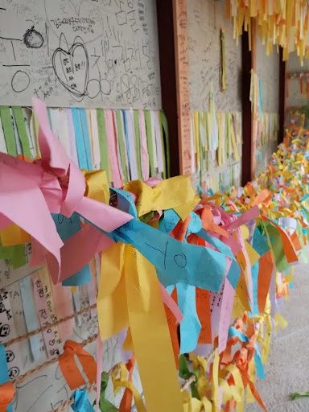
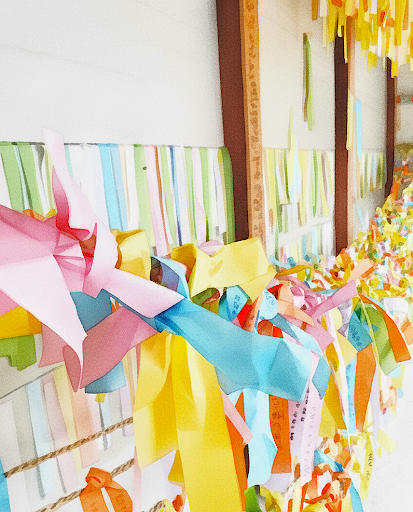
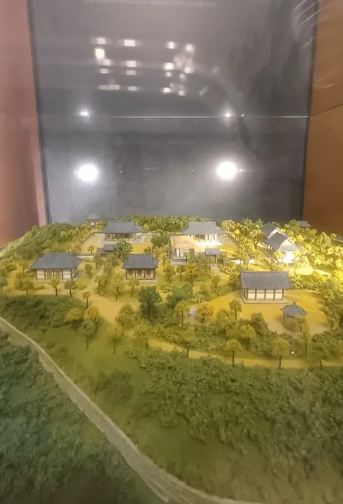

연구학교 보고서: 마을교육 활동
미술 교과 시간 활용, 사진 촬영 기법 탐구
1. 감사 & 칭찬 일기 쓰기 도덕 / 창체
마을의 일상생활 속에서 감사한 마음 표현하기 (감사 일기) 및 우리 마을 속에서 성장해 나가는 나 자신 관리하기 (칭찬 일기) 활동을 진행했습니다.
AI 마음일기 서비스를 활용하여 감사일기와 칭찬일기 쓰기 활동을 진행하였습니다.
2. 사진 촬영 기법 탐구 및 연습하기 미술
가. 전문적인 자료 제공
깃허브 페이지스(GitHub Pages) 서비스와 클로드 AI, 제미나이 AI를 활용하여 보다 전문적인 자료를 학생의 눈높이에 맞추어 접근성 높게 제공하였습니다.
나. 과제 부여 및 촬영 연습
구글 클래스룸과 태블릿PC를 활용한 과제 부여 및 교내 촬영 연습을 진행했습니다.
3. 우리 마을의 드라마 촬영 세트장 방문 (9월 29일~30일)
가. 현장 촬영 및 체험
개인별로 태블릿 PC 및 개인 스마트폰을 활용하여 작품 사진을 촬영하고 세트장 소품을 체험했습니다.


나. 작품 수합 (에듀테크 활용)
수합 과정에서 패들렛(Padlet), 구글 폼(Google Forms)과 같은 에듀테크를 효율적으로 활용했습니다.


다. 기술 지원
개인 스마트폰 중 사용 제한이 있는 학생들의 경우, 블루투스 페어링으로 교내 태블릿PC에 작품을 옮길 수 있도록 안내하여 모든 학생이 참여할 수 있도록 했습니다.
4. 생성형 AI를 활용한 사진 창작 활동
발문(프롬프트) 및 의견을 학생들로부터 수합하여, 희망하는 경우 생성형 AI 기술을 활용한 창작 활동을 진행했습니다.
구글 제미나이, 휘스크, 챗GPT 등 다양한 생성형 AI 서비스를 교차 사용하였습니다.
작품 예시 1) 정지혜, "소원 종이"
요청사항: 벽면의 낙서를 지우고 맑은 수채화 느낌으로 표현
원본 (Before)
AI 편집본 (After)
작품 예시 2) 김서하, "박물관의 미니어처 마을"
요청사항: 유리에 비친 휴대전화 제거, 밝은 하늘을 넣어서 실제로 있는 듯한 평화로운 마을을 표현
원본 (Before)
AI 편집본 (After)